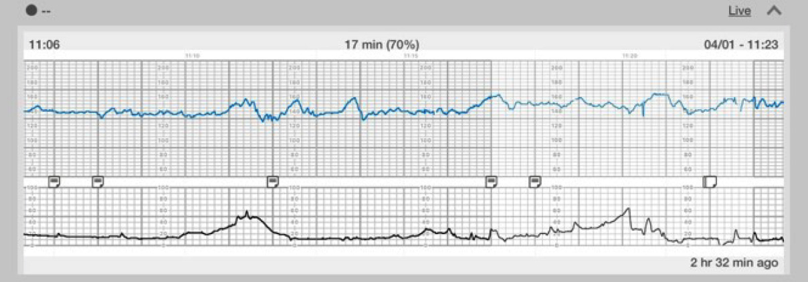

Página 9 · Vigilância aguda e cardiotocografia
Do traçado ao laudo: DIP ≠ Categoria, e as três categorias
Traçado "lindo"
Várias acelerações em sequência, variabilidade presente, nada afundando. → Categoria I.
Traçado de asfixia
Perda de variabilidade e desacelerações tardias em série. → Categoria III.
Entre eles mora tudo o mais. Mas antes de classificar, desfaça a confusão que a banca planta: Categoria não é a mesma coisa que DIP.
A confusão-mãe: DIP ≠ Categoria
A confusão-mãe da aula, e uma das pegadinhas mais cobradas: DIP (I/II/III) é uma característica do traçado; Categoria (I/II/III) é a classificação — o laudo. São coisas diferentes e não devem ser confundidas. Um traçado pode ter DIP I e ser Categoria I; pode ter DIP III e ser Categoria II. O número do DIP não determina o número da Categoria. DIP descreve um evento; Categoria julga o traçado inteiro.
| DIP — característica do traçado | Categoria — laudo / classificação |
|---|---|
| DIP I / II / III (um evento no traçado) | Categoria I / II / III (julga o traçado inteiro) |
| Não se traduzem 1-para-1: um traçado pode ter DIP III e ser Categoria II. | |
| Categoria | Critério |
|---|---|
| Cat I | 110–160 · variabilidade normal · sem DIP II/III · admite DIP I · aceleração opcional |
| Cat III | variabilidade ≤5 + [DIP II ≥50% OU DIP III repetição OU bradi <110] OU sinusoidal isolado |
| Cat II | tudo que não é I nem III (a maior) |
Interativo: acione cada degrau para ver o critério da categoria.
A gramática visual da plataforma: cada degrau é uma categoria com seus critérios — Cat I (110–160, variabilidade normal, sem DIP II/III, admite DIP I, aceleração opcional) · Cat II (o grande meio-termo) · Cat III (variabilidade ≤5 obrigatória + um de três, ou sinusoidal isolado). A conduta continua na próxima página.Categoria I: tudo normal
A Categoria I é tudo normal: linha de base 110–160 bpm, variabilidade normal, sem DIP II e sem DIP III. É o traçado que tranquiliza por completo. (A conduta da Categoria I — o que fazer diante dela — fica para a próxima página; aqui só o critério.)
O que a Cat I admite e não admite
Duas finuras da Categoria I que caem: ela admite DIP I (que nunca tem significado patológico), mas não admite DIP III — nem na dúvida. Não se quer na Categoria I nada que possa significar algo pior; o DIP III, por poder ser patológico, exclui a Cat I mesmo quando parece benigno. E a aceleração pode estar presente ou ausente sem tirar a Categoria I, desde que linha de base e variabilidade estejam normais e não haja DIP II nem DIP III. Ou seja: aceleração não é obrigatória para ser Cat I; o que não pode é DIP II, DIP III ou variabilidade alterada.
Categoria III: a asfixia
A Categoria III é asfixia / sofrimento fetal agudo. E começa obrigatoriamente por perda de variabilidade — e mais. Guarde esse "e mais": perda de variabilidade isolada não basta para carimbar Cat III. É condição necessária, não suficiente.
Os limiares da Cat III
Os limiares, verbatim de prova: perda de variabilidade ≤ 5 bpm (obrigatória) associada a DIP II de repetição em pelo menos 50% do traçado, OU DIP III de repetição, OU bradicardia sustentada abaixo de 110 bpm. A estrutura é: variabilidade ≤5 E (um de três). Só a perda de variabilidade, sozinha, não fecha Cat III.
Há um quarto carimbo independente de Categoria III que a enumeração não lista: o padrão sinusoidal (o da anemia fetal grave da página da variabilidade). Na FEBRASGO/NICHD, o sinusoidal sozinho já classifica Cat III, independentemente da variabilidade. A Cat III fecha por [variabilidade ≤5 + um de três] OU por padrão sinusoidal. Nota de precisão: "de repetição/recorrente" = ocorrer em ≥50% das contrações numa janela de 20 min.
Interativo: acenda cada critério e veja por que a perda de variabilidade é necessária, não suficiente.
A estrutura lógica "variabilidade ≤5 E (um de três)": a perda de variabilidade (obrigatória) destacada + os três ramos qualificadores (DIP II ≥50% · DIP III de repetição · bradicardia <110), mais o ramo sinusoidal como carimbo independente. Cada hotspot mostra por que um critério sozinho não basta (exceto o sinusoidal).A variabilidade decide o DIP III duvidoso
A própria variabilidade ajuda a decidir se um DIP III é patológico: perda de variabilidade somada a DIP III de repetição carimba a gravidade. Um DIP III com variabilidade preservada tende ao benigno; o mesmo DIP III com perda de variabilidade migra para a Cat III. A variabilidade é o árbitro do DIP III duvidoso.
Categoria II: tudo que não é I nem III
A Categoria II é tudo que não é I nem III — o "em cima do muro". É a maior categoria, o grande meio-termo. Exemplo típico: paciente com variabilidade preservada (o que exclui a III) mas com DIP III (o que exclui a I) fica na II. Não é normal o bastante para ser I, nem grave o bastante para ser III. (A conduta da Cat II — complementar ou repetir — é da próxima página.)
Os dois traçados-âncora
Fixe pelos extremos. A Categoria I clássica ("linda"): várias acelerações seguidas, variabilidade presente, nenhuma desaceleração — nada afundando. A Categoria III mostrada: perda de variabilidade com todas as desacelerações vindo tardiamente (DIP II de repetição, todas depois da contração, sem nenhuma que venha junto ou antes que a confundisse com DIP III) — traçado de asfixia. Ver os dois lado a lado grava a classificação.


Ver os dois lado a lado grava a classificação por oposição: um polo tranquiliza por completo; o outro, no painel C, tem a linha basal quase plana e desacelerações tardias recorrentes.
Cat I: OpenStax/Rice via Medicine LibreTexts, Fig. 16.26 — CC BY 4.0. Cat III: Schifrin BS et al., Front Pediatr 2022, Fig. 7 (painel C) — CC BY 4.0.
Quiz — fixação
Traçado com variabilidade preservada (moderada) e presença de DIP III de repetição, sem bradicardia. Categoria?
- B) Correta. A variabilidade normal tira a III (que exige ≤5); o DIP III tira a I (que não admite DIP III nem na dúvida). Resta a II, a maior categoria.
- A) Fixa só na variabilidade e ignora o critério de exclusão do DIP III. A Cat I não admite DIP III, nem na dúvida; variabilidade normal sozinha não garante Cat I.
- C) A confusão-mãe: traduz DIP III direto para Categoria III. Cat III exige perda de variabilidade ≤5 (obrigatória); com variabilidade preservada, não fecha III.
- D) Confunde meio-termo com indefinição. É perfeitamente classificável pela regra de exclusão.
Sobre os critérios da Categoria III, assinale a correta:
- B) Correta. Variabilidade ≤5 e um de três — ou, à parte, o sinusoidal isolado (ENR-3). A perda de variabilidade é necessária, não suficiente (fora o ramo sinusoidal).
- A) Superestima o parâmetro mais dramático. Perda de variabilidade isolada não basta; é o "e mais" da página.
- C) De novo a tradução DIP→Categoria. DIP III pode ser benigno e cair na Cat II; não classifica III sozinho.
- D) Pega um fragmento verdadeiro e o apresenta como o todo. Linha de base fora da faixa (bradi <110) é um dos qualificadores associados à variabilidade ≤5, não a definição isolada.
Emitido o laudo de asfixia, resta a pergunta que salva o feto: diante de uma Categoria III na sua frente, o que se faz antes de correr para a cesárea?